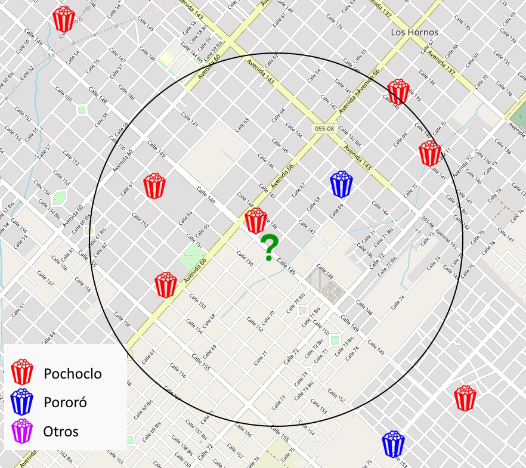
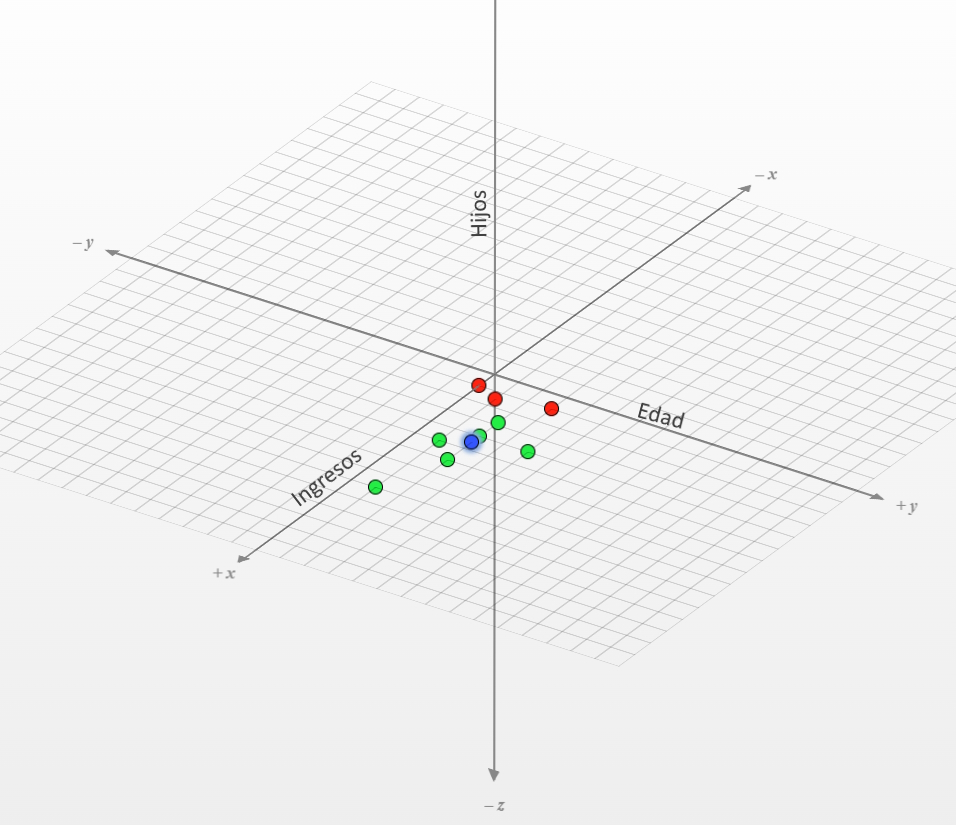

Un amigo te explica KNN
Primero que nada, KNN está en inglés, es la abreviación de k-nearest neighbors, que en español son los k vecinos más cercanos. Es un algoritmo que se usa en la ciencia de datos como modelo de clasificación y de regresión, y si no estás seguro que significa eso, te recomiendo leer este post que arme a modo de intro para explicar algunos de estos conceptos.
Aprendizaje supervisado
KNN es un modelo de aprendizaje supervisado, entonces, lo que tenemos que hacer es con nuestra data definir, por un lado, datos de entrada al modelo y, por otro lado, alguna variable “objetivo”, que es la que vamos a tratar de predecir. El target/objetivo puede ser un valor numérico (como en los problemas de regresión) o una etiqueta de clase (como en los de clasificación).
El modelo luego va a tratar de encontrar algún patrón en los datos de entrada que ayuden a predecir la variable objetivo. Si quiero predecir la temperatura de mañana algunos buenos datos de entrada podrían ser humedad, viento, temperatura de hoy, estación del año, fecha, hora, latitud, longitud y, a partir de ellos, el modelo va a “deducir” cómo interactúan estas variables para darme un estimado de temperatura de mañana. Si la pregunta es “¿Cuál va a ser la temperatura mañana?” es un problema de regresión, y la respuesta sería un número, como 13°C, si la pregunta en cambio es “¿Va a hacer más de 18 grados mañana?” es un problema de clasificación, y la respuesta sería sí o no.
La clave de estos modelos es que necesitamos datos de la variable objetivo para poder entrenarlos. En el ejemplo de la temperatura, para poder entrenar el modelo, primero tendría que ingresar muchos datos de distintos lugares, fechas, horas y temperaturas (observaciones), incluida la temperatura que hizo el día siguiente, para luego pedirle predecir el objetivo solo con los datos de entrada.
-eso quiere decir que si yo mido esos datos en la puerta de mi casa todos los días, después puedo hacer un pronóstico del tiempo mejor que el del noticiero?
-Mmm no exactamente, podrías hacer un buen modelo de la temperatura en la puerta de tu casa, pero tus modelos siempre están sesgados por las observaciones que le metés.
-cómo sesgado, si yo lo mido con un termómetro y lo ingreso, no es ningún tema de opinión esto.
-claro, lo que pasa es que en la puerta de tu casa seguramente nunca nieve, por ejemplo, y ese mismo modelo después lo queres aplicar en un lugar más frío y el modelo nunca aprendió a predecir temperaturas negativas, porque ninguno de tus datos de entrada eran negativos.
-si los datos de entrada son malos, la predicción es mala
K-Vecinos más cercanos
Ok, pero puntualmente KNN, ¿que hace? Es bastante intuitivo, cuando queremos predecir algo, usa toda la data con la que lo entrenamos, se fija cuáles observaciones están más cerca / son más parecidas y si se parecen en las otras cosas, podemos asumir que se va a parecer también en la variable objetivo.
Esta imagen nos ayuda bastante. Tenemos estas figuras flotando en la nada, algunos triángulos, algunos cuadrados; cuando a KNN le preguntamos por otro punto (que no sabemos qué es) agarra los k vecinos más cercanos (k es un número entero impar que nosotros elegimos) y, en base a eso, se la juega a decirnos que seguramente ese punto sea también un triángulo.

Una ventaja de este modelo es que tiene un solo “hiperparámetro” que es K, el número de vecinos que tenes que considerar. Si tenemos datos de entrada y definimos K, ya podemos empezar a usarlo.
¿Pochoclo, Pororó o Palomita de Maiz?
Vamos con un ejemplo más importante que la temperatura y los cuadrados. Suponéte que vas al cine con alguien que no conocés mucho, querés preguntarle si pedir un balde de pochoclos, pero es un match de una app de citas y no sabés si le dice pochoclo, pororó o alguna otra variante de las tantas que hay para referirse al popcorn.
Es un re problema, y muy serio, pero por suerte tenés el dato de latitud y longitud donde nació esta persona, y un censo de cómo le dice un montón de gente de distintos lugares de habla hispana. Suponete que ingresamos K = 5, lo que va a hacer el modelo ahora es buscar la latitud y longitud de esta persona y ver cuales son las 5 más cercanas, el que más se repita va a ser la “predicción”.
Dados estos vecinos (4 pochoclo, 1 pororó) nuestra predicción es que esta persona les va a decir pochoclos!
En este ejemplo, además sale a la luz una desventaja del modelo. Si bien es bastante sencillo de implementar, cuando lo corremos calcula la distancia entre mi punto y todos los otros puntos. Para un problema como el de los pochoclos, si yo parto de datos de todo el mundo resulta muy costoso computacionalmente, siendo algo que se puede simplificar en algunas reglas sencillas, como Buenos Aires = “Pochoclo”, Ciudad de México = “Palomita de maíz”.
¿Qué significa Distancia?
Todo este tiempo estuve hablando de cercanía y de distancia, pero KNN no está acotado solamente a problemas de geolocalización. Podemos usar cualquier dato que podamos llevar a un valor numérico a ser una variable de entrada. Si fuéramos por ejemplo un banco, y quisiéramos definir si un cliente es confiable para prestarle plata nos podemos hacer la pregunta “si le presto plata me la va a devolver?” y para buscar la respuesta revolvemos nuestras observaciones (que son todos los clientes a los que ya le prestamos plata y sabemos si nos la devolvieron o no).
Para este ejemplo agarramos a una persona imaginaria “Fede”. Fede tiene 20 años, y sus ingresos son de 200.000 pesos y no tiene hijos; el banco entonces agarra estos datos y los “vectoriza”, y Fede pasa a ser un punto en 3D así: (20, 200.000, 0)
Ahora busca los vecinos más cercanos, a ver si ellos devolvieron la plata o no, pero no vecinos de latitud y longitud, sino parecidos en estas 3 dimensiones (edad, ingresos, hijos) y seguramente encuentre gente joven 18-22 años, que gane en un rango parecido, soltera y con 0-1 hijos.
Y este truquito funciona para cualquier variable numérica, podemos sacar la distancia usando todas las dimensiones imaginarias que queramos, incluso podemos usar variables que no son numéricas ( estado civil) si lo pasamos a un valor booleano (0=soltero y 1=casado)
Es importante escalar los valores para una comparación más justa, pero eso lo vamos a hablar en otra oportunidad.
Resumiendo
KNN es un modelo predictivo, lo usamos para predecir categorías o estimar valores, y si bien hablamos de vecinos y distancias, el modelo puede interpretar cualquier variable numérica como una dimensión para buscar vecinos que estén cerca. Es bastante sencillo de explicar y de implementar, pero a veces puede resultar muy costoso computacionalmente si el set de datos es muy muy grande.
Si te interesó el post, compartilo con tus vecinos más cercanos
Facundo Vogel - Julio 2024